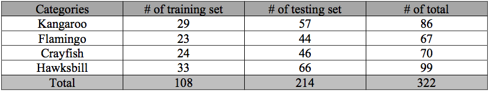
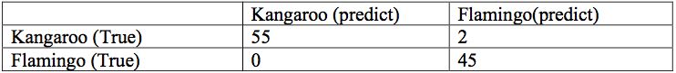
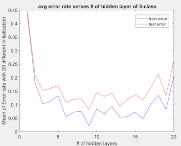
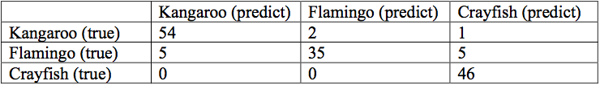
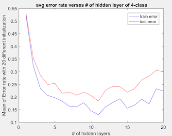
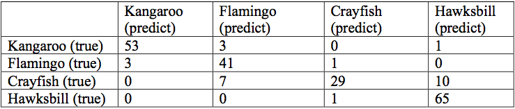

Introduction
In this project, we demonstrate how to solve simple object recognition problem by using transfer learning of convolutional neural network (CNN). We use pre-trained CNN to preprocess the dataset in terms of fine-tuning. Then we use the preprocessed the data to train classifiers to solve the object recognition problems. We retrain the CNN by insert SVM and MLP layers. Classification accuracy and confusion matrix are used to evaluate the performance of our classifiers. Our creative ideas and results will be presented in detail in the following parts.
Our experiment is run on Matlab. We use pre-trained CNN from CNN framework from Matconvnet [2]. The dataset we work with is Caltech 101 [1].
Experiment Outline
- Partition dataset into training data and test data 3.
- Pre-process all the images (input) but put them into pre-trained CNN extract the full-connected layers as the processed the data
- Use the processed data to train classifiers and evaluate the result.
Select Dataset (Images)
In this experiment, our data are from Caltech 101 [1], which is an image dataset with 101 categories. We select four species of animals for our object classification experiments: kangaroo, flamingo, crayfish and hawksbill and partition them as training set and test set with ratio 1:2. Our final image dataset is formed as:

In this experiment, our data are from Caltech 101 [1], which is an image dataset with 101 categories. We select four species of animals for our object classification experiments: kangaroo, flamingo, crayfish and hawksbill and partition them as training set and test set with ratio 1:2. Our final image dataset is formed as:
(Table 1: dataset partition table)
(Fig. 1, 2, 3 & 4: Sample image of kangaroo, flamingo, crayfish and hawksbill respectively)
Source Code of constructing and partitioning dataset available at: https://github.com/cuiaiyu/transferLearningCNN/blob/master/setupDatasets.m
Pre-processing Data (Fine-Tuning)
For every image we use (for both the training data and test data), we preprocess the image through the following steps:
- 1. Normalize the input image into size 224x224x3;
- 2. Put the image into the pre-trained CNN MatConvNet [2] as input, and run MatConvNet forwards;
- 3. Extract the fully-connected layer (1x4096) out of the pre-trained CNN result, and this fully-connected layer (1x4096) is going to be our pre-processed image.
- After these steps, all the images in our dataset are converted into 1x4096 vectors and we will then use them to train and test our classifiers.
Source code for extracting features available at: https://github.com/cuiaiyu/transferLearningCNN/blob/master/extractFeatures.m
Classification
We tried different classification methods with the processed data. We first try binary classification for kangaroo vs. Flamingo by using Support Vector Machine (SVM) and Multilayer Perceptron (MLP). And then we extends our experiments to multiclass classification by MLP.
In this section, we describe how we set up the experiment for each model of classifier. In next section, we show the experiment result in details.
-
A. SVM
We only use SVM to do the binary classification problem. We simply use the Matlab built-in toolbox of SVM by feeding in our processed data (1x4096 vectors).
Source code available: https://github.com/cuiaiyu/transferLearningCNN/blob/master/simplesvm.m
-
B. MLP
Then we try another classifier, MLP. We train MLPs for 2-class, 3-class, and 4-class classification problems with the 1x4096 vectors as data input.
To find a best accuracy, for each classification problem, we train MLPs with different number of hidden layers from 1 to 20 For each experiment, we repeat 20 times and take average of the error rate, because the random initializations.
We also use the Matlab built-in toolbox for MLP by setting the configuration as:
- a. Training function: resilient backpropagation
- b. Performance measurement: mean square error (MSE)
Source Code available: https://github.com/cuiaiyu/transferLearningCNN/blob/master/simpleNN.m
Evaluations
-
A. Binary classification(Kangaroo vs. Flamingo)
First, we only consider the two-class classification problem: kangaroo vs. flamingo. We apply two methods to achieve this classification: Support Vector Machine (SVM) and Multilayer Perceptron (MLP).
-
a. Support Vector Machine (SVM)
We first train a SVM by the Matlab built-in SVM toolbox. In the SVM experiment, with the test set we achieve an accuracy of 98.04% and confusion matrix:
(Table 2: Confusion matrix for SVM)
-
b. Multilayer Perceptron (MLP)
We also train a MLP to solve the two-class classification problem. We train MLP with different number of hidden layers from 1 to 20 with the training set. For each number of hidden layers, we compute the error rate on the test set. Then we repeat the experiment 20 times and take the average of error rate, because the MLP is initialized randomly. We finally get result as following:
 (Fig. 5: Average error rate vs. # of hidden layers for 2-class)
(Fig. 5: Average error rate vs. # of hidden layers for 2-class)
From the above result, we can roughly see that there is no big difference between the performance between SVM and MLP of the 2-class problem with the features extracted from a pre-trained CNN.
-
-
B. Multi-class classification
After we tried binary classification problem, right now we are moving to work on multi-class classification. We try three-class and four-class classification by using multilayer perceptron (MLP). Same idea as above, we try different # of hidden layers from 1-20, and repeat the experiments for 20 times for both three-class and four-class classification.
-
a. Three-class classification (Kangaroo vs. Flamingo vs. Crayfish)
We train and test the MLP as described above, which gives the following result:
 (Fig. 6: Average error rate vs. # of hidden layers for 3-class)As shown in the pictures, the best # of hidden layer is around 9 which could give us an accuracy around 0.9. So we set the # of hidden layer to be 9 and run the experiment again, we get the following confusion matrix:

(Table 3: Confusion matrix for MLP with 9 hidden layers of 3-class) -
b. Four-class classification (Kangaroo vs. Flamingo vs. Crayfish vs. Hawksbill)
We perform the same training and testing steps as those of 2-classes and 3-class classification. We get performance like:
(Fig. 7: Average error rate vs. # of hidden layers for 4-class)As shown, the best # of hidden layer is around 11, which could give an accuracy of ~0.8. Therefore, we fix the # of hidden layer as 11, and compute the confusion matrix, which is the chart below:

(Table 4: Confusion matrix for MLP with 11 hidden layers of 4-class)
-
From our experiments, we find that with the increasing of # of categories, the accuracy of MLPs decreases. Also, with the increasing of # of categories, the more hidden layers is needed to get a better accuracy. This makes sense because the more categories, the more ambiguous and complex the classification problem becomes. However, we will still need more experiments to prove that.
Conclusion
In this experiment, we demo that the transfer learning method and show that transfer learning work well with SVM and MLP. A major drawback of this experiment is the dataset we selected is small, so the result is not general enough. For the future work, we would like to try a large dataset and more classes to see what will happen.